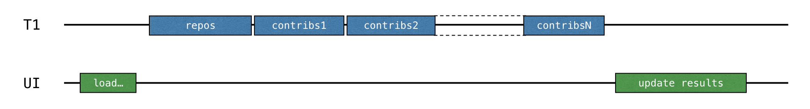
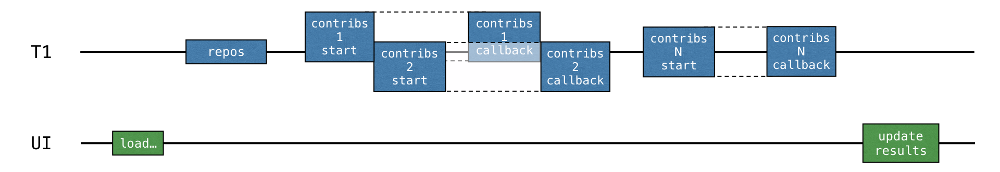
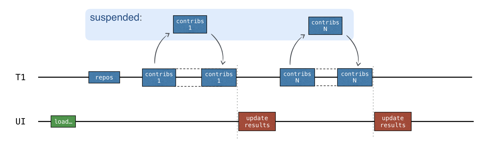
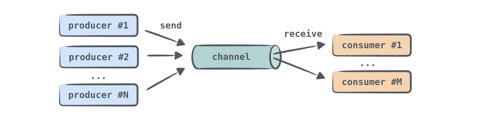
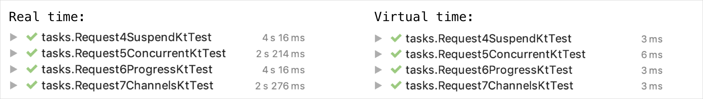

本教程将介绍如何在 IntelliJ IDEA 中使用协程发起网络请求。你可以让底层线程继续执行其他工作，也无须编写回调。
你将学到以下内容。
为什么要用挂起函数执行网络请求，以及具体该怎么做。
如何用协程并发发送请求。
如何用通道在不同协程之间传递信息。
网络请求使用 Retrofit 库。对于其他支持协程的库，本教程的方法同样适用。
开始前的准备
下载并安装最新版 IntelliJ IDEA。
-
在欢迎页选择 Get from VCS，或在菜单中选择 File → New → Project from Version Control，克隆示例项目。 [1]
也可以用下面的命令取得项目。
git clone https://github.com/kotlin-hands-on/intro-coroutines
生成 GitHub 开发者令牌
项目将使用 GitHub API。要访问该 API，请提供 GitHub 账户名，并使用密码或令牌进行认证。如果已启用双重身份验证，使用令牌即可。
为自己的账户生成一个供本练习使用的 GitHub 令牌。
-
给令牌起一个容易辨认的名字，例如
coroutines-tutorial。
保持所有权限范围（scope）均未勾选，点击页面底部的 Generate token。
复制生成的令牌。
启动程序
应用先加载某个组织的所有仓库及其贡献者，默认组织是 kotlin。稍后要把同一个人在不同仓库的贡献次数相加，再按总数排序。
-
打开
src/contributors/main.kt，运行main()，会出现下图所示的窗口。
如果字体太小，可调整
main()里的setDefaultFontSize(18f)。 在对应输入框里填入 GitHub 用户名和令牌（或密码）。
在 Variant 下拉框中选择 BLOCKING。
点击 Load contributors。界面会暂时停止响应，随后显示贡献者列表。
打开程序输出，确认数据已经加载。每次请求成功后，程序都会记录贡献者列表。
这段逻辑既可以用阻塞式请求实现，也可以用回调实现。接下来将把这两种做法与协程实现进行比较，并了解如何用通道在协程之间传递信息。
阻塞式请求
Retrofit 把 GitHub 的两个 HTTP 接口包装成 Kotlin 方法，一个查询组织下的仓库，另一个查询指定仓库的贡献者。
interface GitHubService {
@GET("orgs/{org}/repos?per_page=100")
fun getOrgReposCall(
@Path("org") org: String
): Call<List<Repo>>
@GET("repos/{owner}/{repo}/contributors?per_page=100")
fun getRepoContributorsCall(
@Path("owner") owner: String,
@Path("repo") repo: String
): Call<List<User>>
}loadContributorsBlocking() 用这些接口取回组织的贡献者列表。
-
打开
src/tasks/Request1Blocking.kt查看实现。fun loadContributorsBlocking( service: GitHubService, req: RequestData ): List<User> { val repos = service .getOrgReposCall(req.org) // #1 .execute() // #2 .also { logRepos(req, it) } // #3 .body() ?: emptyList() // #4 return repos.flatMap { repo -> service .getRepoContributorsCall(req.org, repo.name) // #1 .execute() // #2 .also { logUsers(repo, it) } // #3 .bodyList() // #4 }.aggregate() }首先把仓库列表存入
repos。然后逐个查询仓库，将每个仓库返回的贡献者列表合并起来。在
#1处，getOrgReposCall()和getRepoContributorsCall()都返回一个 Call 对象，此时还没有发出请求。在标记 2，调用 Call.
execute()才开始请求。它会同步等待，期间占用调用线程。收到响应后，分别调用
logRepos()和logUsers()记录结果（#3）。如果 HTTP 响应包含错误，错误也会记录在这里。最后取出响应体，其中包含所需数据。本教程在出错时使用空列表作为结果，并记录相应错误（
#4）。
-
用扩展函数
bodyList()封装重复出现的.body() ?: emptyList()。fun <T> Response<List<T>>.bodyList(): List<T> { return body() ?: emptyList() } -
再次运行程序，查看 IntelliJ IDEA 的运行输出，与下面的日志比较。
1770 [AWT-EventQueue-0] INFO Contributors - kotlin: loaded 40 repos 2025 [AWT-EventQueue-0] INFO Contributors - kotlin-examples: loaded 23 contributors 2229 [AWT-EventQueue-0] INFO Contributors - kotlin-koans: loaded 45 contributors ...每行开头是程序启动后经过的毫秒数，方括号内是线程名，据此可查出加载代码从哪条线程发起。
行末才是消息本身，说明加载了多少仓库或贡献者。
日志表明，所有结果都记录在主线程上。选择 BLOCKING 运行时，窗口会冻结，直到加载结束才能响应输入。所有请求都在调用
loadContributorsBlocking()的线程上执行，也就是主 UI 线程。在 Swing 中，这条线程叫作 AWT 事件分发线程。它在等待请求时被阻塞，所以界面也就停住了。
全部列表加载完之后，界面才更新。
-
打开
src/contributors/Contributors.kt。找到负责选择加载方式的loadContributors()，看它怎样调用loadContributorsBlocking()。when (getSelectedVariant()) { BLOCKING -> { // 阻塞 UI 线程 val users = loadContributorsBlocking(service, req) updateResults(users, startTime) } }updateResults()紧接在loadContributorsBlocking()后执行。updateResults()会更新界面，因此每次都必须在 UI 线程上调用。loadContributorsBlocking()也在 UI 线程上调用，所以它一旦阻塞，整个窗口就停止响应。
任务 1
先把数据处理正确。同一位用户每参与一个仓库就多出现一行。实现 aggregate()，让每个用户只出现一次，User.contributions 保存其跨仓库总数，列表按总贡献数降序排列。
打开 src/tasks/Aggregation.kt，实现 List<User>.aggregate()。按每位用户的总贡献数从高到低排序。
test/tasks/AggregationKtTest.kt 给出了输入及预期结果，可用来检查去重和排序。
完成本题后，kotlin 组织的结果列表应与下图相近。

任务 1 参考解法
按 login 执行 groupBy()。得到的映射里，每个登录名对应同一用户在不同仓库出现的记录。
遍历每组，累加 contributions，用登录名和总数构造一个新的
User。-
将结果按贡献数从高到低排序。
fun List<User>.aggregate(): List<User> = groupBy { it.login } .map { (login, group) -> User(login, group.sumOf { it.contributions }) } .sortedByDescending { it.contributions }
除了 groupBy()，也可以用 groupingBy() 实现分组。
回调
前一种实现能得到结果，但它会阻塞线程，导致界面冻结。传统的解决方式是使用回调。
将后续逻辑提取成函数（常写成 lambda），交给发起操作的一方，等操作结束再调用。
可以把整个计算移到另一条线程，也可以让 Retrofit 异步发起请求，在回调中接收响应。我们分别试一次。
把加载移到后台线程
-
打开
src/tasks/Request2Background.kt。thread()启动一条新线程，整个加载过程转到那里。thread { loadContributorsBlocking(service, req) }所有加载工作都转移到单独的线程后，主线程就可以执行其他任务。

-
loadContributorsBackground()的函数签名随之改变。最后一个参数是回调updateResults()，等全部数据加载完毕再调用。fun loadContributorsBackground( service: GitHubService, req: RequestData, updateResults: (List<User>) -> Unit ) -
调用
loadContributorsBackground()时，更新结果的操作现在写在回调中。先前的写法是在函数调用返回后立即执行updateResults()。loadContributorsBackground(service, req) { users -> SwingUtilities.invokeLater { updateResults(users, startTime) } }SwingUtilities.invokeLater会把updateResults()安排在主 UI 线程（AWT 事件分发线程）上执行，这样就能在正确的线程更新结果。
不过，选 BACKGROUND 加载贡献者时，你会发现列表数据已经更新，界面却没有变化。
任务 2
修复 src/tasks/Request2Background.kt 里的 loadContributorsBackground()，让窗口显示计算后的列表。
任务 2 参考解法
尝试加载后可以从日志中看到，数据已加载，界面却没有显示结果。把最终的用户列表传给 updateResults()，并调用它，就能修复这个问题。
thread {
updateResults(loadContributorsBlocking(service, req))
}传入 lambda 只代表准备好了后续动作，必须在完成处真正调用它。
使用 Retrofit 的异步回调
上一个方案把整个加载过程移到后台线程，但未充分利用资源。请求仍逐个执行，等待结果期间线程一直被阻塞。它原本可以做其他事，例如开始下一个请求，让完整结果更早就绪。
现在把每个请求拆成「发起加载」和「处理响应」两段，用回调执行第二段。
在收到前一个仓库的结果、执行相应的回调之前，就可以开始加载下一个仓库。

Retrofit 的 Call.enqueue() 启动 HTTP 请求，并接受回调，用来描述请求完成后的处理。
打开 src/tasks/Request3Callbacks.kt，查看 loadContributorsCallbacks() 如何使用这个接口。
fun loadContributorsCallbacks(
service: GitHubService, req: RequestData,
updateResults: (List<User>) -> Unit
) {
service.getOrgReposCall(req.org).onResponse { responseRepos -> // #1
logRepos(req, responseRepos)
val repos = responseRepos.bodyList()
val allUsers = mutableListOf<User>()
for (repo in repos) {
service.getRepoContributorsCall(req.org, repo.name)
.onResponse { responseUsers -> // #2
logUsers(repo, responseUsers)
val users = responseUsers.bodyList()
allUsers += users
}
}
}
// 待解决：这段代码为什么不能正常工作？怎样修复？
updateResults(allUsers.aggregate())
}同一文件里的
onResponse()扩展接收 lambda，省去写匿名对象的步骤。标记 1、2 是两个回调的开头，分别处理仓库响应和贡献者响应。
目前的解法还不能正常工作。选择 CALLBACKS 加载贡献者，界面什么也不显示，Request3CallbacksKtTest 中的测试却马上结束并报告通过。
试着找出原因并修复代码，也可以查看下面的解法。
任务 3（选做）
修改 src/tasks/Request3Callbacks.kt，使加载到的贡献者确实显示在界面上。
任务 3 的第一次尝试
并发请求缩短了潜在等待时间，但当前代码刚发完请求就调用 updateResults()，响应还没填进 allUsers。
可以先尝试把更新逻辑移进回调。
val allUsers = mutableListOf<User>()
for ((index, repo) in repos.withIndex()) { // #1
service.getRepoContributorsCall(req.org, repo.name)
.onResponse { responseUsers ->
logUsers(repo, responseUsers)
val users = responseUsers.bodyList()
allUsers += users
if (index == repos.lastIndex) { // #2
updateResults(allUsers.aggregate())
}
}
}标记 1 用索引遍历 repos。
标记 2 在每个回调里检查自己是否对应列表中的最后一个仓库。
如果是最后一个索引，就更新结果。
这段代码仍未达到目标。可以先自己找原因，再看下面的解法。
任务 3 的第二次尝试
请求是并发启动的，结果可能以任意顺序返回。最后一个仓库的请求未必最后完成。
因此，把当前索引等于 lastIndex 当作完成条件，可能漏掉某些仓库的结果。
一旦最后一个仓库先返回，晚到的仓库就赶不上这次界面更新。
可以另外计数，每完成一个仓库加一，等计数达到仓库总数再更新。
val allUsers = Collections.synchronizedList(mutableListOf<User>())
val numberOfProcessed = AtomicInteger()
for (repo in repos) {
service.getRepoContributorsCall(req.org, repo.name)
.onResponse { responseUsers ->
logUsers(repo, responseUsers)
val users = responseUsers.bodyList()
allUsers += users
if (numberOfProcessed.incrementAndGet() == repos.size) {
updateResults(allUsers.aggregate())
}
}
}处理 getRepoContributors() 请求的不同回调未必在同一条线程上执行，所以示例用支持同步访问的列表保存结果，并用 AtomicInteger 更新计数。
任务 3 的第三次尝试
更好的办法是使用 CountDownLatch。把它的计数初始化为仓库数，每处理完一个仓库就减一。等到计数归零，再更新结果。
val countDownLatch = CountDownLatch(repos.size)
for (repo in repos) {
service.getRepoContributorsCall(req.org, repo.name)
.onResponse { responseUsers ->
// 正在处理仓库
countDownLatch.countDown()
}
}
countDownLatch.await()
updateResults(allUsers.aggregate())随后在主线程更新结果。这样比把这段逻辑委托给子线程更直接。
从这三次尝试可以看出，用回调写出正确的代码并不容易，尤其是涉及多个底层线程、需要同步的时候。
使用挂起函数
Retrofit 还支持直接把接口声明成挂起函数，无须先返回 Call<List<Repo>> 让外部执行。
interface GitHubService {
@GET("orgs/{org}/repos?per_page=100")
suspend fun getOrgRepos(
@Path("org") org: String
): List<Repo>
}getOrgRepos()声明为suspend函数。用挂起函数发请求时，底层线程不会被阻塞。后面的章节将说明其工作方式。getOrgRepos()直接返回结果。使用这种写法，不必先取得Call对象。请求不成功时会抛出异常。
也可以声明为返回 Response，让业务代码自行检查 HTTP 状态和响应体。本教程使用这种形式。
在 src/contributors/GitHubService.kt 的 GitHubService 接口中加入下面的声明。
interface GitHubService {
// getOrgReposCall 和 getRepoContributorsCall 的声明
@GET("orgs/{org}/repos?per_page=100")
suspend fun getOrgRepos(
@Path("org") org: String
): Response<List<Repo>>
@GET("repos/{owner}/{repo}/contributors?per_page=100")
suspend fun getRepoContributors(
@Path("owner") owner: String,
@Path("repo") repo: String
): Response<List<User>>
}任务 4
修改加载逻辑，改用 getOrgRepos() 与 getRepoContributors()。调用它们的 loadContributorsSuspend() 也需要标为 suspend。
从
src/tasks/Request1Blocking.kt复制loadContributorsBlocking()的实现，放进src/tasks/Request4Suspend.kt中的loadContributorsSuspend()。把返回
Call的方法换成新的挂起接口。选 SUSPEND 运行。请求进行时操作窗口，检查它是否仍能响应。
任务 4 参考解法
把 .getOrgReposCall(req.org).execute() 改成 .getOrgRepos(req.org)，再同样替换查询贡献者的调用。
suspend fun loadContributorsSuspend(service: GitHubService, req: RequestData): List<User> {
val repos = service
.getOrgRepos(req.org)
.also { logRepos(req, it) }
.bodyList()
return repos.flatMap { repo ->
service.getRepoContributors(req.org, repo.name)
.also { logUsers(repo, it) }
.bodyList()
}.aggregate()
}给
loadContributorsSuspend()加上suspend修饰符。先前要调用
execute才能得到Response，现在 API 函数直接返回Response。这是 Retrofit 的具体做法。其他库的 API 会有所不同，但原理相同。
协程
使用挂起函数的代码看起来与阻塞版本相似。主要区别在等待期间：阻塞版本会阻塞线程，挂起版本会挂起协程。
block -> suspend
thread -> coroutine启动一个协程
回到 src/contributors/Contributors.kt。loadContributorsSuspend() 在 launch 的 lambda 中调用，launch 是协程库提供的函数。
launch {
val users = loadContributorsSuspend(req)
updateResults(users, startTime)
}这次 launch 启动「加载并显示」这项计算。网络请求等待时暂停计算并释放线程，响应回来后接着往下执行。
这样一段可以挂起再继续的计算就是协程。在这里，它负责从加载数据一直走到显示结果。
协程仍然在线程上执行。挂起时，下一步从哪里继续以及需要的局部状态保存在内存中，线程可以先执行其他任务。

计算准备好继续时，会重新回到线程上运行，恢复时所用的线程可能与之前不同。
在 loadContributorsSuspend() 里，每次先发送一个贡献者请求，然后整个加载协程在等待响应的位置挂起。
相应的响应到达后，再继续处理该仓库。

于是请求从 UI 线程发起，等待期间 UI 仍能响应。下面的时间线画出了线程空出来的时段。
-
选择 SUSPEND，日志可以验证请求都是从 UI 线程发起的。
2538 [AWT-EventQueue-0 @coroutine#1] INFO Contributors - kotlin: loaded 30 repos 2729 [AWT-EventQueue-0 @coroutine#1] INFO Contributors - ts2kt: loaded 11 contributors 3029 [AWT-EventQueue-0 @coroutine#1] INFO Contributors - kotlin-koans: loaded 45 contributors ... 11252 [AWT-EventQueue-0 @coroutine#1] INFO Contributors - kotlin-coroutines-workshop: loaded 1 contributors -
选择 Run → Edit Configurations，把
-Dkotlinx.coroutines.debug加入 JVM 的 VM options，让日志也显示协程标识。
运行
main()时，线程名会带上协程名。需要反复实验时，也可以把这一选项加入 Kotlin 运行配置模板。
这里始终是同一个加载协程，例如 @coroutine#1。代码按顺序执行，要等前一个响应回来才发下一个请求。这段等待期间，UI 线程可以处理其他事情。
挂起函数在等待时会让出线程。不过，到目前为止，这段代码还没有引入并发。
并发
相比新建一条操作系统线程，启动协程所需的资源少得多。独立的异步计算可以各自交给一个协程。
常见的协程构建器有 launch、async 和 runBlocking。其他库也可以提供专用构建器。
async 启动新协程，并返回 Deferred 对象。它与其他地方称为 Future 或 Promise 的概念相似，代表一项已经开始的计算，其最终结果将在未来某个时刻取得。
async 与 launch 的主要区别在于，launch 用于启动无须返回特定结果的计算。它返回一个代表该协程的 Job，调用 Job.join() 可以等待它完成。
Deferred 也实现了 Job，并带有结果类型。lambda 的最后一个表达式决定结果是 Deferred<Int> 还是 Deferred<CustomType> 等。
调用 Deferred.await() 取得结果。结果还没准备好时，挂起的是正在等待的调用协程。
import kotlinx.coroutines.*
fun main() = runBlocking {
val deferred: Deferred<Int> = async {
loadData()
}
println("waiting...")
println(deferred.await())
}
suspend fun loadData(): Int {
println("loading...")
delay(1000L)
println("loaded!")
return 42
}runBlocking 连接普通函数与挂起函数，也就是连接阻塞与非阻塞代码。它可以用来启动最外层的主协程，主要用于 main() 函数和测试。
如果手里是一组 Deferred，可以用 awaitAll() 等待整组结果。
import kotlinx.coroutines.*
fun main() = runBlocking {
val deferreds: List<Deferred<Int>> = (1..3).map {
async {
delay(1000L * it)
println("Loading $it")
it
}
}
val sum = deferreds.awaitAll().sum()
println("$sum")
}让每个仓库的请求各在一个子协程里运行，前一个仓库还在等待，后一个请求就能发出去。

总加载时间与 CALLBACKS 版本大致相同，无须编写回调。代码中的 async 也明确指出了哪些部分可以并发运行。
任务 5
在 Request5Concurrent.kt 中以已有的 loadContributorsSuspend() 为起点，实现 loadContributorsConcurrent()。
任务 5 提示
启动新协程需要协程作用域。把 loadContributorsSuspend() 的内容复制到 coroutineScope 的代码块里，这样就可以在其中调用 async。
suspend fun loadContributorsConcurrent(
service: GitHubService,
req: RequestData
): List<User> = coroutineScope {
// ...
}可以按下面的结构组织列表和等待步骤。
val deferreds: List<Deferred<List<User>>> = repos.map { repo ->
async {
// 为每个仓库加载贡献者
}
}
deferreds.awaitAll() // List<List<User>>任务 5 参考解法
用 async 包住每个查询贡献者的请求，每个仓库就有一个对应的协程。async 返回 Deferred<List<User>>。创建协程消耗的资源较少，因此这里可以按需要创建。
-
映射后的元素现在是
Deferred，不能沿用原先的flatMap。先awaitAll()取得List<List<User>>，再用flatten().aggregate()展平并汇总。suspend fun loadContributorsConcurrent( service: GitHubService, req: RequestData ): List<User> = coroutineScope { val repos = service .getOrgRepos(req.org) .also { logRepos(req, it) } .bodyList() val deferreds: List<Deferred<List<User>>> = repos.map { repo -> async { service.getRepoContributors(req.org, repo.name) .also { logUsers(repo, it) } .bodyList() } } deferreds.awaitAll().flatten().aggregate() } 运行并查看日志。即使这些协程都在主 UI 线程上执行，请求的等待时间也已经能重叠。
-
若要观察多个线程执行，在
async参数里显式传入Dispatchers.Default。async(Dispatchers.Default) { }CoroutineDispatcher决定调度到哪些线程。未显式指定时，async会继承外层作用域的调度器。在 JVM 上，
Dispatchers.Default使用共享线程池，支持并行执行。线程数与可用 CPU 核心数相同，只有一个核心时仍会使用两个线程。
-
修改
loadContributorsConcurrent()的调度器，并在发送请求前加一条日志。async(Dispatchers.Default) { log("starting loading for ${repo.name}") service.getRepoContributors(req.org, repo.name) .also { logUsers(repo, it) } .bodyList() } -
再次运行，比较每个协程启动和恢复时的线程名。
1946 [DefaultDispatcher-worker-2 @coroutine#4] INFO Contributors - starting loading for kotlin-koans 1946 [DefaultDispatcher-worker-3 @coroutine#5] INFO Contributors - starting loading for dokka 1946 [DefaultDispatcher-worker-1 @coroutine#3] INFO Contributors - starting loading for ts2kt ... 2178 [DefaultDispatcher-worker-1 @coroutine#4] INFO Contributors - kotlin-koans: loaded 45 contributors 2569 [DefaultDispatcher-worker-1 @coroutine#5] INFO Contributors - dokka: loaded 36 contributors 2821 [DefaultDispatcher-worker-2 @coroutine#3] INFO Contributors - ts2kt: loaded 11 contributors在给出的日志中，
coroutine#4在worker-2启动，在worker-1继续。
回到 src/contributors/Contributors.kt，找出 CONCURRENT 选项的调用位置。
-
如果要求在主 UI 线程执行，可指定
Dispatchers.Main。launch(Dispatchers.Main) { updateResults() }如果主线程正忙，新启动的协程会挂起，排队等候主线程执行。主线程空闲时它才会恢复。
通常可以沿用外层作用域的调度器。定义
loadContributorsConcurrent()时如果没有给每个请求指定Dispatchers.Default，调用方就可以按需选用默认调度器、主 UI 线程或自定义调度器。后面测试
loadContributorsConcurrent()时，就能在带有TestDispatcher的上下文中调用它。这样的设计更灵活，测试也更简单。
-
按下面的方式在调用方选择上下文，保留
loadContributorsConcurrent() 内部的继承关系。launch(Dispatchers.Default) { val users = loadContributorsConcurrent(service, req) withContext(Dispatchers.Main) { updateResults(users, startTime) } }updateResults()操作窗口，要切回Dispatchers.Main。withContext()在指定的协程上下文中执行代码，调用方挂起等待代码完成，然后取得结果。这里也可以启动新协程，再显式挂起等待它结束，写成launch(context) { ... }.join()，只是更繁琐。
再运行一次，核对请求是否在共享线程池上执行。
结构化并发
协程作用域负责组织不同协程之间的结构和父子关系。通常需要在某个作用域内启动新协程。
上下文保存执行这项工作所用的信息，例如协程名和调度器。
用 launch、async 或 runBlocking 启动协程时，也会自动创建相应的作用域。这些函数都接受带接收者的 lambda，其隐式接收者的类型是 CoroutineScope。
launch { /* 这里的 this 是 CoroutineScope */ }启动一个新协程需要作用域。
launch与async是CoroutineScope的扩展函数，调用时要有显式或隐式接收者。runBlocking启动的协程是一个例外，因为runBlocking是顶层函数。它会阻塞当前线程，因而主要用于main()函数和测试，衔接普通代码与挂起代码。
在 runBlocking、launch 或 async 的块中，可以直接启动属于它的子任务。
import kotlinx.coroutines.*
fun main() = runBlocking { /* 这里的 this 是 CoroutineScope */
launch { /* ... */ }
// 等价写法如下
this.launch { /* ... */ }
}在 runBlocking 里调用 launch，实际是对类型为 CoroutineScope 的隐式接收者调用扩展函数。把接收者写出来，就是 this.launch。
于是内层 launch 成为外层 runBlocking 的子任务。父子关系来自实际用来启动任务的作用域。
coroutineScope 可以创建新的作用域，而无需另行启动协程。挂起函数里如果不能直接使用外层作用域，又想有组织地启动子协程，就可以这样创建作用域。新作用域会自动成为调用该挂起函数的外层作用域的子作用域。loadContributorsConcurrent() 就是这样的例子。
也可以特意使用 GlobalScope.async 或 GlobalScope.launch。这样创建的是独立的顶层任务。
这种组织协程的机制称为结构化并发。与全局作用域相比，它有以下好处。
子任务的生命周期受到其所属作用域管理。
用户放弃操作或任务失败时，作用域能按传播规则取消相关子任务。
作用域会等待所有子任务结束。父协程即使已经运行完自己的最后一行，也要等子协程完成。
GlobalScope.async 没有把这些任务接到本次加载上，它们可以活到应用结束。你可以保存每个句柄，手动等待或取消，但这些操作不会随本次加载自动发生。
取消贡献者加载
做两个版本。一个在 coroutineScope 里启动子协程，另一个用 GlobalScope。取消外层加载，对照两份日志。
-
在
Request5Concurrent.kt的loadContributorsConcurrent()中加入三秒延迟。suspend fun loadContributorsConcurrent( service: GitHubService, req: RequestData ): List<User> = coroutineScope { // ... async { log("starting loading for ${repo.name}") delay(3000) // 加载这个仓库的贡献者 } // ... }让请求协程先启动，再等三秒才真正发请求。这样留出了点击取消的时间。
复制
loadContributorsConcurrent()的实现，放进Request5NotCancellable.kt的loadContributorsNotCancellable()，然后删去创建coroutineScope的那一层。-
此时原来的
async找不到作用域，特意改为 GlobalScope.async，作为对照。suspend fun loadContributorsNotCancellable( service: GitHubService, req: RequestData ): List<User> { // #1 // ... GlobalScope.async { // #2 log("starting loading for ${repo.name}") // 加载这个仓库的贡献者 } // ... return deferreds.awaitAll().flatten().aggregate() // #3 }标记 1、3 改为由函数直接返回结果，原来则由 lambda 的末尾表达式返回。
所有加载贡献者的协程都在
GlobalScope中启动，不再是原协程作用域的子协程（#2）。
启动程序，选 CONCURRENT 后加载。
-
等请求协程都已启动，点击 Cancel。观察后续日志，待发请求随父任务一起取消。
2896 [AWT-EventQueue-0 @coroutine#1] INFO Contributors - kotlin: loaded 40 repos 2901 [DefaultDispatcher-worker-2 @coroutine#4] INFO Contributors - starting loading for kotlin-koans ... 2909 [DefaultDispatcher-worker-5 @coroutine#36] INFO Contributors - starting loading for mpp-example /* 点击取消 */ /* 没有发出请求 */ -
再选
NOT_CANCELLABLE，重复相同操作。2570 [AWT-EventQueue-0 @coroutine#1] INFO Contributors - kotlin: loaded 30 repos 2579 [DefaultDispatcher-worker-1 @coroutine#4] INFO Contributors - starting loading for kotlin-koans ... 2586 [DefaultDispatcher-worker-6 @coroutine#36] INFO Contributors - starting loading for mpp-example /* 点击取消 */ /* 但所有请求仍然会发出 */ 6402 [DefaultDispatcher-worker-5 @coroutine#4] INFO Contributors - kotlin-koans: loaded 45 contributors ... 9555 [DefaultDispatcher-worker-8 @coroutine#36] INFO Contributors - mpp-example: loaded 8 contributors此时那些独立启动的请求协程还在，三秒后仍会发送请求。
-
查看 Cancel 按钮的实现。它只显式取消外层加载 Job，正常父子关系会让取消自动向下传播。
interface Contributors { fun loadContributors() { // ... when (getSelectedVariant()) { CONCURRENT -> { launch { val users = loadContributorsConcurrent(service, req) updateResults(users, startTime) }.setUpCancellation() // #1 } } } private fun Job.setUpCancellation() { val loadingJob = this // #2 // 点击取消按钮时，取消加载任务 val listener = ActionListener { loadingJob.cancel() // #3 updateLoadingStatus(CANCELED) } // 为取消按钮添加监听器 addCancelListener(listener) // 更新状态并移除监听器 // 在加载任务完成后 } }
launch 返回代表整次加载与显示工作的 Job。标记 1 以它为接收者，调用扩展函数 setUpCancellation()。
也可以显式保留 Job，写成下面的两步。
val job = launch { }
job.setUpCancellation()在
setUpCancellation()内部，可以把接收者赋给一个名为loadingJob的变量，后面读起来更清楚（#2）。标记 3 为 Cancel 按钮添加监听器，点击时取消
loadingJob。
使用结构化并发时，取消父协程就会自动把取消请求传给它的所有子协程。
继承外层上下文
将相关协程放在同一作用域里，可以统一设置执行环境，需要替换时也只改一处。
下面来看外层作用域的调度器如何生效。coroutineScope 或协程构建器创建的新作用域继承外层作用域的上下文。在本例中，外层指调用挂起函数 loadContributorsConcurrent() 的作用域。
launch(Dispatchers.Default) { // 外层作用域
val users = loadContributorsConcurrent(service, req)
// ...
}调度器是上下文元素，因此外层选用 Default 后，内层未另行指定的 async 也由它调度。
suspend fun loadContributorsConcurrent(
service: GitHubService, req: RequestData
): List<User> = coroutineScope {
// 这个作用域继承外层作用域的上下文
// ...
async { // 用继承的上下文启动嵌套协程
// ...
}
// ...
}在顶层选好主要上下文元素，让子协程继承；确实需要不同执行位置时，再局部覆盖。
逐步显示进度
有些仓库早就返回了，当前界面却要等全部完成才显示列表。转圈图标只说明还在加载，无法告诉用户已经拿到了哪些贡献者。
可以每收到一个仓库的响应，就显示一份截至此刻的汇总结果。

在 src/tasks/Request6Progress.kt 里把更新界面的逻辑作为回调传入，每次有中间结果就调用。
suspend fun loadContributorsProgress(
service: GitHubService,
req: RequestData,
updateResults: suspend (List<User>, completed: Boolean) -> Unit
) {
// 正在加载数据
// 每次得到中间结果都调用 updateResults()
}在 Contributors.kt 的 PROGRESS 分支，调用方传入一个回调，通过 Main 调度器在主线程上更新结果。
launch(Dispatchers.Default) {
loadContributorsProgress(service, req) { users, completed ->
withContext(Dispatchers.Main) {
updateResults(users, startTime, completed)
}
}
}loadContributorsProgress()的 updateResults 参数是挂起函数类型，因为传入的 lambda 里需要调用withContext。updateResults()回调多接收一个 Boolean 参数，用来说明加载是否完成、这一次给出的是否为最终结果。
任务 6
在 Request6Progress.kt 中实现 loadContributorsProgress()，显示加载的中间进度。以 Request4Suspend.kt 中的 loadContributorsSuspend() 为基础。
先确保顺序请求时能正确显示进度，下一节再加并发。
每次呈现的是到目前为止的汇总列表，不能只显示最新仓库的那一份。
当同一用户又出现在新仓库时，他在屏幕上的总贡献数也应累加。
任务 6 参考解法
定义 allUsers 保存已加载并完成汇总的贡献者列表，每加载好一个仓库的贡献者就更新它。
suspend fun loadContributorsProgress(
service: GitHubService,
req: RequestData,
updateResults: suspend (List<User>, completed: Boolean) -> Unit
) {
val repos = service
.getOrgRepos(req.org)
.also { logRepos(req, it) }
.bodyList()
var allUsers = emptyList<User>()
for ((index, repo) in repos.withIndex()) {
val users = service.getRepoContributors(req.org, repo.name)
.also { logUsers(repo, it) }
.bodyList()
allUsers = (allUsers + users).aggregate()
updateResults(allUsers, index == repos.lastIndex)
}
}顺序请求与并发请求
每完成一个请求，就调用一次 updateResults()。

这个版本按顺序读写汇总数据，因此这段更新无须额外同步。
下一步希望兼得两项效果：并发发出请求，每个响应到达后立即更新一次。

要加入并发，可以使用通道。
通道
编写使用共享可变状态的代码相当困难，也容易出错，回调的解法就是一例。更简单的方式是通过通信共享信息。不同协程可以使用通道互相通信。
通道提供发送端和接收端。一个协程发送一份结果，另一个从通道接收它。

发送者称为生产者，接收者称为消费者。两边都可以有多个协程。

多个消费者共享同一通道时，一个元素只会交给其中一个。接收后，该元素就从通道中移出。
通道像一个队列，一端加入，另一端取走。它还可以挂起等待：空通道上 receive 等待新值；有容量上限的缓冲区装满时，按默认策略，send 等待空位。
这里涉及三个接口，即 SendChannel、ReceiveChannel 和 Channel，最后一个继承前两个。通常先创建通道，把 SendChannel 交给生产者，让它只能发送，再把 ReceiveChannel 交给消费者，让它只能接收。send 和 receive 都声明为 suspend。
interface SendChannel<in E> {
suspend fun send(element: E)
fun close(): Boolean
}
interface ReceiveChannel<out E> {
suspend fun receive(): E
}
interface Channel<E> : SendChannel<E>, ReceiveChannel<E>生产者可以关闭通道，表示以后没有更多元素。
库里的几类通道在两方面有所不同：能暂存几个元素，以及 send() 是否会挂起。对于仍然开放的通道，receive() 的行为相同，有值就取，空了就挂起等待。
- 无界通道
-
无界通道没有配置容量上限，send 不会因为缓冲区满而挂起。积压的数据会持续占用内存，严重时触发
OutOfMemoryException。消费者发现通道为空时仍会挂起等待。
- 有界缓冲通道
-
有界缓冲通道只保存指定数量的元素。缓冲区装满后，下一次 send 要等消费者取走一个元素，才能继续交付。
- 会合通道
-
会合通道没有缓冲区，等同于容量为零的缓冲通道。
send()和receive()需要配对，先到的一方会挂起等另一方。没有接收者准备好时，send 会等待；没有发送者可配对时，receive 也会等待。
Rendezvous 意为「在约定的时间和地点会面」。这里要会面的是
send()和receive()：两边都准备好，元素才能交接。
- 合并通道
-
合并通道保留最新的待取元素。新值会覆盖尚未取走的旧值，send 不会因等待空位而挂起。
创建 Channel 时，用容量或相应常量指定通道类型。
val rendezvousChannel = Channel<String>()
val bufferedChannel = Channel<String>(10)
val conflatedChannel = Channel<String>(CONFLATED)
val unlimitedChannel = Channel<String>(UNLIMITED)默认创建无缓冲的会合通道。
在接下来的任务中，你将创建一个会合通道、两个生产者协程和一个消费者协程。
import kotlinx.coroutines.channels.Channel
import kotlinx.coroutines.*
fun main() = runBlocking<Unit> {
val channel = Channel<String>()
launch {
channel.send("A1")
channel.send("A2")
log("A done")
}
launch {
channel.send("B1")
log("B done")
}
launch {
repeat(3) {
val x = channel.receive()
log(x)
}
}
}
fun log(message: Any?) {
println("[${Thread.currentThread().name}] $message")
}任务 7
在 src/tasks/Request7Channels.kt 实现 loadContributorsChannels()，并发加载各个仓库，同时持续呈现中间结果。
使用前面写过的两个函数，即 Request5Concurrent.kt 中的 loadContributorsConcurrent() 和 Request6Progress.kt 中的 loadContributorsProgress()。
任务 7 提示
每个请求协程拿到自己仓库的贡献者后，都向同一个通道发送这份列表。
val channel = Channel<List<User>>()
for (repo in repos) {
launch {
val users = TODO()
// ...
channel.send(users)
}
}另一个协程顺序接收通道里的列表，每收到一份就处理一次。
repeat(repos.size) {
val users = channel.receive()
// ...
}receive() 按顺序调用，因此不需要额外的同步机制。
任务 7 参考解法
沿用 loadContributorsProgress() 的做法，用 allUsers 保存贡献者列表的中间状态。每从通道接收到一份列表，就合入已有用户，重新汇总，再用 updateResults 回调更新界面。
suspend fun loadContributorsChannels(
service: GitHubService,
req: RequestData,
updateResults: suspend (List<User>, completed: Boolean) -> Unit
) = coroutineScope {
val repos = service
.getOrgRepos(req.org)
.also { logRepos(req, it) }
.bodyList()
val channel = Channel<List<User>>()
for (repo in repos) {
launch {
val users = service.getRepoContributors(req.org, repo.name)
.also { logUsers(repo, it) }
.bodyList()
channel.send(users)
}
}
var allUsers = emptyList<User>()
repeat(repos.size) {
val users = channel.receive()
allUsers = (allUsers + users).aggregate()
updateResults(allUsers, it == repos.lastIndex)
}
}各仓库谁先准备好谁先交付。请求刚发出、通道还空着时，receive 会挂起负责汇总的加载协程。
第一个生产者交来列表后，加载协程恢复，receive 返回这份列表，界面马上得到第一批结果。
选择 CHANNELS 运行，观察用户列表怎样逐批出现。
协程和通道都无法完全消除并发本身的复杂性，但能让代码的执行过程更容易理解。
测试协程
现在来测试各个解法，检查并发协程版是否比顺序挂起函数版更快，以及通道版是否比简单的进度显示版更快。
用模拟 GitHub 服务代替真实网络，为每个响应指定固定延迟，再比较总时间。
repos request - returns an answer within 1000 ms delay
repo-1 - 1000 ms delay
repo-2 - 1200 ms delay
repo-3 - 800 ms delay先取仓库列表用 1000 毫秒，三个仓库再分别用 1000、1200 和 800 毫秒。顺序总计 4000 毫秒；并发只等最慢的那一个，总计 2200 毫秒。
对显示进度的版本，还可以同时断言每一批数据的内容和它出现的时刻。
测试数据在 test/contributors/testData.kt。Request4SuspendKtTest、Request7ChannelsKtTest 等文件提供使用模拟服务的测试。
直接测真实经过时间有两个问题。
每个测试要等两到四秒，反复运行整组测试会很慢。
机器和调度也会引入耗时。若增加固定容差，模拟延迟还得足够大才看得出差异。例如容差半秒时，十分之一秒的延迟很难可靠区分。
另一种更可靠的计时方式是用专门的框架反复运行同一段代码。不过这会进一步延长总耗时，而且框架的学习和配置也比较复杂。
为了解决这些问题，并验证在给定延迟下哪个解法更快，可以配合专用测试调度器使用虚拟时间。调度器记录从测试开始经过的虚拟时间，在现实中立即执行工作。在这个调度器上运行协程时，delay 会立即返回，同时推进虚拟时间。
测试在现实中很快结束，却仍能精确核对虚拟时钟走到某一刻时发生了什么。

把 runBlocking 换成 runTest。测试块的接收者是 TestScope，在共享测试调度器上执行的 delay 会推进虚拟时间。
@Test
fun testDelayInSuspend() = runTest {
val realStartTime = System.currentTimeMillis()
val virtualStartTime = currentTime
foo()
println("${System.currentTimeMillis() - realStartTime} ms") // 约 6 毫秒
println("${currentTime - virtualStartTime} ms") // 1000 毫秒
}
suspend fun foo() {
delay(1000) // 自动推进虚拟时间，无须实际等待
println("foo") // 一调用 foo() 就开始执行
}用 TestScope 的 currentTime 属性读取当前虚拟时间。
下例的真实耗时可能只有几毫秒，虚拟时间却已推进 1000 毫秒。
要让子协程里的延迟也使用虚拟时间，所有子协程都要在 TestDispatcher 上启动。没有显式指定其他调度器时，子协程会自动继承 TestScope 的测试调度器。
@Test
fun testDelayInLaunch() = runTest {
val realStartTime = System.currentTimeMillis()
val virtualStartTime = currentTime
bar()
println("${System.currentTimeMillis() - realStartTime} ms") // 约 11 毫秒
println("${currentTime - virtualStartTime} ms") // 1000 毫秒
}
suspend fun bar() = coroutineScope {
launch {
delay(1000) // 自动推进虚拟时间，无须实际等待
println("bar") // 一调用 bar() 就开始执行
}
}如果上例的 launch 显式使用 Dispatchers.Default，测试会失败，并抛出异常，提示任务尚未完成。
因此 loadContributorsConcurrent() 内部应继承上下文。若把 Dispatchers.Default 写死在子任务里，就无法用同一个测试时钟验证这段逻辑。
把调度器留给调用方决定，生产代码与测试就能复用同一个函数。
默认情况下，使用实验性测试 API 时编译器会给出警告。可以在测试函数或整个测试类上标注 @OptIn(ExperimentalCoroutinesApi::class) 来消除警告。也可以添加下面的编译器参数，表明项目选择使用实验性 API。
compileTestKotlin {
kotlinOptions {
freeCompilerArgs += "-Xuse-experimental=kotlin.Experimental"
}
}教程配套项目已经在 Gradle 脚本中设置了相应编译选项。
任务 8
重构 tests/tasks/ 中的以下测试，使用虚拟时间代替真实时间。
Request4SuspendKtTest.ktRequest5ConcurrentKtTest.ktRequest6ProgressKtTest.ktRequest7ChannelsKtTest.kt
比较改写前后整组测试在真实世界里的运行时间。
任务 8 提示
-
将
runBlocking换成runTest，将System.currentTimeMillis()换成currentTime。@Test fun test() = runTest { val startTime = currentTime // 要重复执行的操作 val totalTime = currentTime - startTime // 测试结果 } 恢复那些检查精确虚拟时间的断言。
记得添加
@UseExperimental(ExperimentalCoroutinesApi::class)。
任务 8 参考解法
下面给出并发版与通道版的测试写法。
fun testConcurrent() = runTest {
val startTime = currentTime
val result = loadContributorsConcurrent(MockGithubService, testRequestData)
Assert.assertEquals("Wrong result for 'loadContributorsConcurrent'", expectedConcurrentResults.users, result)
val totalTime = currentTime - startTime
Assert.assertEquals(
"The calls run concurrently, so the total virtual time should be 2200 ms: " +
"1000 for repos request plus max(1000, 1200, 800) = 1200 for concurrent contributors requests)",
expectedConcurrentResults.timeFromStart, totalTime
)
}先断言结果出现的虚拟时刻，再断言结果本身。
fun testChannels() = runTest {
val startTime = currentTime
var index = 0
loadContributorsChannels(MockGithubService, testRequestData) { users, _ ->
val expected = concurrentProgressResults[index++]
val time = currentTime - startTime
Assert.assertEquals(
"Expected intermediate results after ${expected.timeFromStart} ms:",
expected.timeFromStart, time
)
Assert.assertEquals("Wrong intermediate results after $time:", expected.users, users)
}
}对照两组测试可以看到，通道版第一批结果比顺序进度版更早出现。
继续学习
可以继续观看 KotlinConf 的 Asynchronous Programming with Kotlin 工作坊。
进一步了解虚拟时间和实验性测试包的用法。